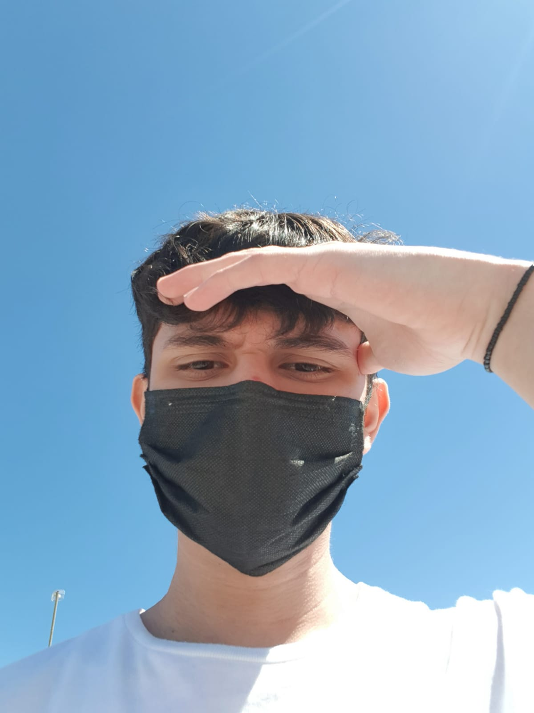
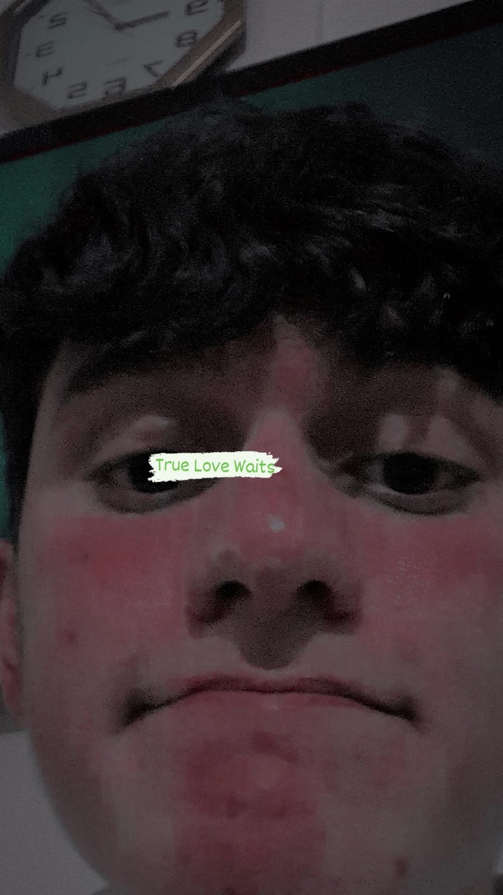
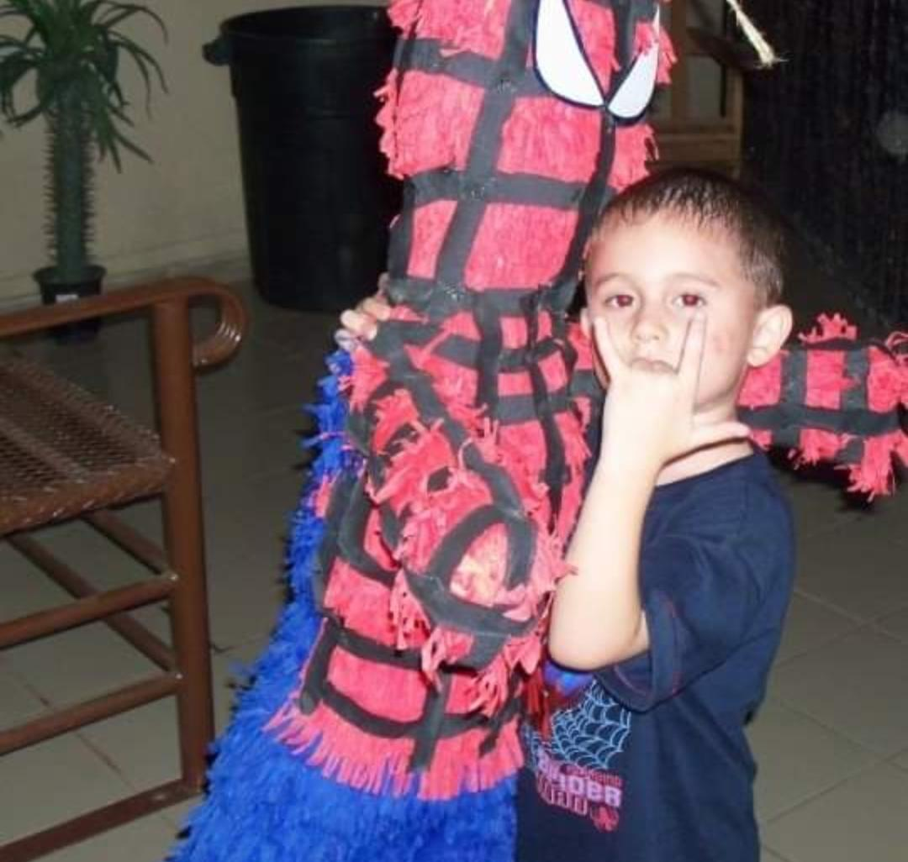
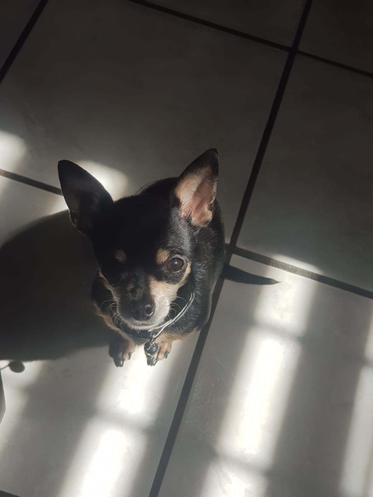
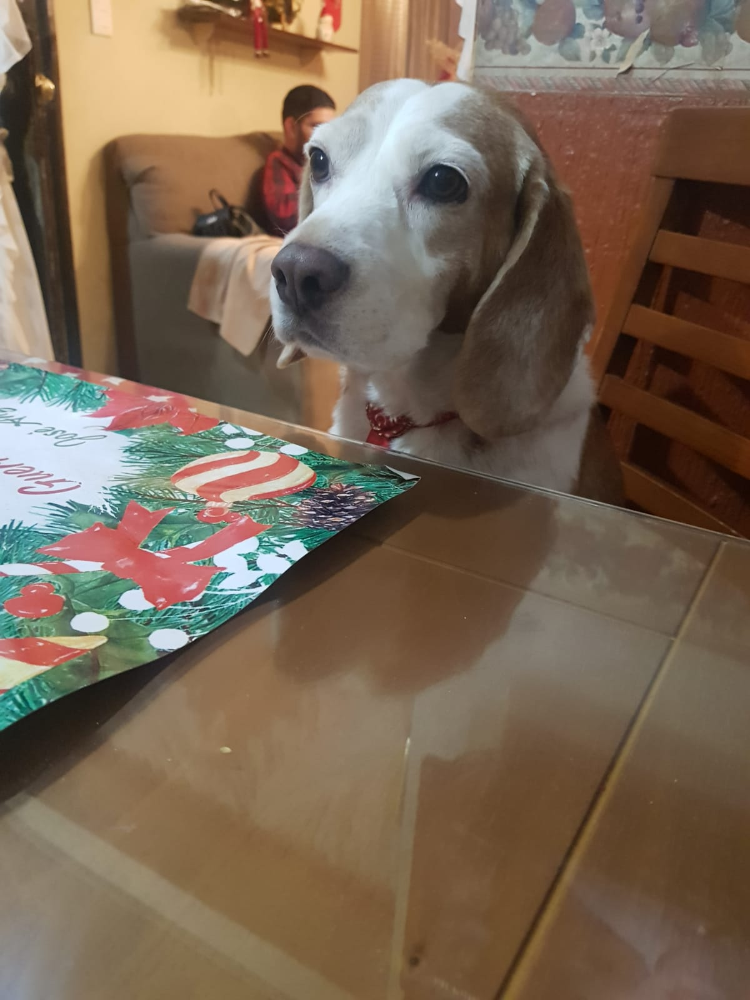
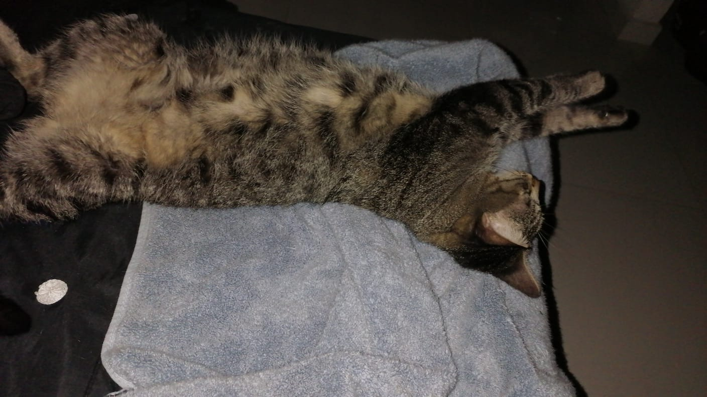

Cantantes/Bandas favoritos: José José, Luis Miguel, The strokes y Joji
Musicas favoritas: True Love Waits, Selfless, Like You Do, Razorblade, Sanctuary y La santa
Peliculas favoritas: Ventajas de ser invisible (AMO), Eterno Resplandor de una mente sin recuerdos, 500 días con ella y The Batman
Sagas/Trilogias favoritas: El hombre araña, Harry Potter y Piratas del caribe



Originario de Culichi town y nacido en un barrio de nacos, salio una persona maravillosa llamada Jose Angel que quiere mucho a sus tilines wtf, bueno x, esta persona fabulosa hizo estas paginas para perder tiempo de su vida y por que los quiere mucho, algo que destaca este tilin es:
1.- No te puede odiar por que te quiere, osea un simio total
2.- ¿?
3.- Te quiere de verdad
Algo que te dejara con la boca abierta es que este tilin no tiene NINGUN DEFECTOOO!!!!! increible esta persona, dejando el bait de lado estos son:
1.- Sobrepiensa todo y cuando digo todo es todo, XD que tonto
2.- Tiene miedo el miedo que le digan chiapaneco
3.- Es inseguro en todo, echenle una mano para que no lo sea
4.- Piensa que el amor verdadero existe, pobre iluso :(
Tambien este chicuelo tiene mascotas WOOW!!! pero solo 1 por que el otro no es suyo ;(


Tambien este chico tiene apodos ¿QUEE!!? no lo sabias sus apodos son los mejores wacha y son:
1.- Nachurro
2.- Tonturro
3.- Ratacho
4.- Mensacho
5.- Nacho
6.- Pendejo
7.- Fan de moris(Nadie me dice asi lo se pero se me antoja poner mi propio apodo, chupenla)
8.- Tatin <3
Algo maravilloso de esta persona es que es fan de una gatita que no ha visto en su vida pero le tiene demasiado cariño asi es hablo de la Moris Trukis <3!!! pero siempre tiene que ver algo malo en una historia, la dueña de esa gatita linda y perfecta es muy mala con ella diciendole gorda, estas personas de hoy son muy salvajes cuidado porfa, pero aun asi quiero mucho a la dueña y solo para presumir mira que linda esta <3

Y eso seria todo de este joven, gracias por tu atención, pero aun no te vayas esta personita dejo una carta para ustedes:
"Gracias por seguir estando conmigo, realmente me ayudan mucho y me hace muy feliz siempre pasar el rato con ustedes, me gustaria que siempre salieramos los 12 juntos pero casi no se puede, solo pido que no nos dejemos de hablar se que es pedir mucho y algo dificil y si alguien de verdad se quiere ir (No sé le entiende este pedazo de la carta), realmente los quiero aunque no se los demuestro los quiero mucho a cada uno de ustedes, GRACIAS POR TODO <3."